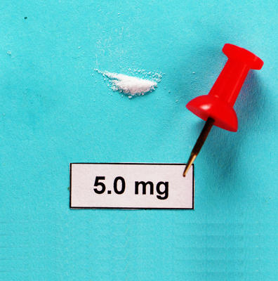

Methomyl is a carbamate insecticide commonly used on orchard and vegetable crops. Carbamate insecticides target the production of the same neurotransmitters most nerve agents do, which are involved in muscular activity. The Carmamate breaks them down causing convulsions, paralysis, and respiratory and heart failure.

Any product with higher than 1% Methemomyl is a restricted substance. The EPA places it as a class 1 restricted insecticide in the Oral and Eye effect categories. Ingestion of 5mg will cause death in 50% of the population.